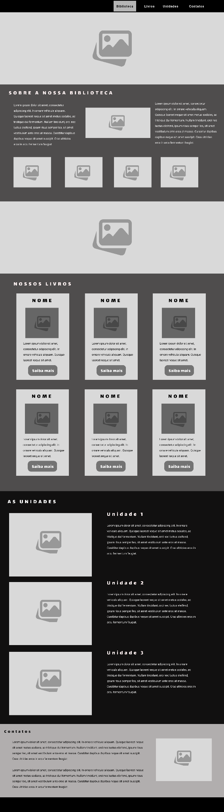
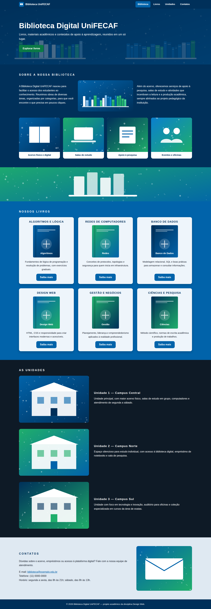
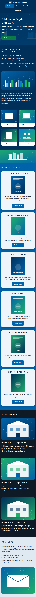

Relatório da Parte Teórica — Disciplina Design Web
Aluno: Pedro de Oliveira Britto · RA: 96029 · Curso: Ciência da Computação
A UniFECAF precisa de sua primeira interface web para a biblioteca digital, antes de implementar funcionalidades completas. O desafio é transformar um protótipo de baixa fidelidade em um site visualmente organizado, responsivo e alinhado à identidade institucional, usando somente HTML e CSS.
O protótipo é uma página única, de rolagem vertical, que define a hierarquia de conteúdo e deixa livres imagens, textos, tipografia e detalhes visuais. Ele contém: (1) barra de navegação com quatro itens (Biblioteca, Livros, Unidades, Contatos); (2) imagem de destaque (hero); (3) seção “Sobre a nossa biblioteca”, com dois blocos de texto, uma imagem central e uma fileira de quatro imagens; (4) faixa de imagem larga; (5) “Nossos livros”, com seis cartões (nome, imagem, descrição e botão “Saiba mais”) em duas linhas de três; (6) “As unidades”, com três blocos de imagem e texto; (7) “Contatos”, com texto e imagem; e (8) rodapé.

A leitura do protótipo mostra um ritmo alternado de fundos (cinza-médio, claro, cinza-escuro, preto), que separa as seções, e o uso recorrente de cartões e de pares imagem + texto. Mantive essa estrutura e esse ritmo, trocando os cinzas por cores da identidade UniFECAF.
O público principal é formado por estudantes de graduação e pós-graduação da UniFECAF, em sua maioria jovens e adultos que estudam em horários variados e acessam conteúdos pelo celular. Os públicos secundários são docentes, que indicam materiais, e candidatos ou visitantes que querem conhecer a estrutura da instituição.
Daí decorrem os requisitos do projeto: navegação simples, com poucos itens e rótulos claros; leitura confortável em telas pequenas (mobile first na prática); carregamento leve (imagens vetoriais SVG); e contraste e foco visíveis, pois o uso é frequente e prolongado.
A cor-base foi extraída do azul do logotipo e dos títulos do material da instituição (#0163AA); o verde vem dos detalhes em degradê dos cantos dos mesmos materiais.
| Cor | Código | Uso |
|---|---|---|
| Azul UniFECAF | #0163AA | Fundo da seção de livros, botões e links |
| Azul-marinho | #00305A | Menu, seção “Sobre”, títulos dos cartões, rodapé |
| Verde | #0B7A46 | Botão de chamada principal (texto branco, contraste ≈ 5,4:1) |
| Verde-claro | #1FAE6B | Anel de foco, detalhes e ilustrações |
| Azul-gelo | #EEF5FB | Fundo dos cartões |
| Grafite azulado | #0E1A26 | Fundo da seção “Unidades” |
| Cinza-azulado | #DFE9F2 | Fundo de “Contatos” |
Tipografia. Os materiais da instituição usam uma sans-serif geométrica (família Poppins). O CSS declara a pilha "Poppins", "Segoe UI", Roboto, Arial, sans-serif: se Poppins estiver instalada, é usada; caso contrário, o navegador escolhe uma fonte do sistema, sem depender de serviços externos. O corpo usa 16 px com entrelinha de 1,65; os títulos de seção usam caixa-alta e espaçamento entre letras, como no protótipo; o título principal usa clamp() para escalar entre 1,9 e 3 rem.
O HTML usa elementos semânticos: header e nav (menu fixo no topo), main com uma section por bloco do protótipo, e footer. Cada seção tem um h2 ligado por aria-labelledby, e há um único h1. Os livros são article, pois cada cartão faz sentido isolado; a galeria é uma lista (ul) de itens com imagem e legenda.
| Seção | Protótipo | Implementação |
|---|---|---|
| Menu | 4 links | Barra fixa (position: sticky) com logotipo, links âncora e item atual destacado |
| Hero | Imagem larga | Imagem de fundo + título, texto e botão |
| Sobre | 2 textos, 1 imagem, 4 imagens | Grade de 3 colunas e galeria de 4 itens (CSS Grid) |
| Faixa | Imagem larga | div com background-image decorativa |
| Livros | 6 cartões | Grade 3×2 com cartões em flexbox; botão alinhado ao fim |
| Unidades | 3 blocos | Grade imagem (5fr) + texto (7fr) |
| Contatos | Texto + imagem | Grade 2fr/1fr; e-mail clicável |
Organização dos arquivos: index.html (estrutura), css/style.css (estilo, organizado em variáveis, base, componentes por seção e media queries) e assets/imagens/ (18 SVGs).
rem, %, fr, clamp()).width: min(1120px, 100% - 2rem) limita a largura em telas grandes e mantém margem lateral em telas pequenas.max-width: 100%, aspect-ratio e object-fit evitam distorção.flex-wrap, então os quatro links cabem sem barra de rolagem horizontal ou menu hambúrguer, que exigiria JavaScript.Foram conferidas as larguras de 1366 px e 390 px; em ambas não há rolagem horizontal, texto cortado ou elementos sobrepostos.
alt descritivo; as decorativas têm alt="".:focus-visible com anel verde de 3 px; botões e links com área de toque confortável.header, nav, main, footer), hierarquia h1–h3, lang="pt-BR" e aria-current no item atual do menu.aria-label com o nome do livro, para que leitores de tela os diferenciem.prefers-reduced-motion desativa a rolagem suave e as transições.Em etapas: (1) interpretar o protótipo, listando seções, hierarquia e padrões repetidos; (2) estruturar o conteúdo em HTML semântico, antes de qualquer estilo; (3) definir o sistema visual (cores extraídas da marca, tipografia, espaçamentos e componentes) em variáveis CSS; (4) construir o layout com Grid e Flexbox, seção por seção, na ordem do protótipo; (5) adaptar para telas menores com media queries e (6) validar contraste, teclado e renderização em duas larguras. O protótipo define o que e a ordem; a identidade define o como parece; e a responsividade garante que funcione em qualquer tela.
Separar estrutura (HTML) de apresentação (CSS) facilita a manutenção: mudar uma cor ou um espaçamento exige editar um único ponto, e o mesmo CSS pode servir a várias páginas futuras da biblioteca. O navegador também guarda o CSS em cache, o que acelera o carregamento.
Evitando larguras fixas em pixels, usando grades flexíveis (fr, minmax), imagens com largura máxima de 100% e pontos de quebra baseados no conteúdo, e testando em larguras extremas (desktop e smartphone).
Cores da marca criam reconhecimento imediato; contraste suficiente entre texto e fundo garante leitura por todos, inclusive pessoas com baixa visão. Por isso as cores da marca foram aplicadas por função (fundo, ação, destaque) e verificadas contra o contraste mínimo, e não escolhidas por gosto.


O principal desafio foi manter a fidelidade à estrutura do protótipo sem perder flexibilidade: pares como imagem + texto e grades de cartões precisaram de regras específicas por largura de tela. Os aprendizados foram a importância do HTML semântico como base para acessibilidade, o uso de variáveis CSS para manter consistência, e a verificação de contraste como critério objetivo para escolher cores.
Links: site publicado: ____________________ · repositório: ____________________ · vídeo: ____________________